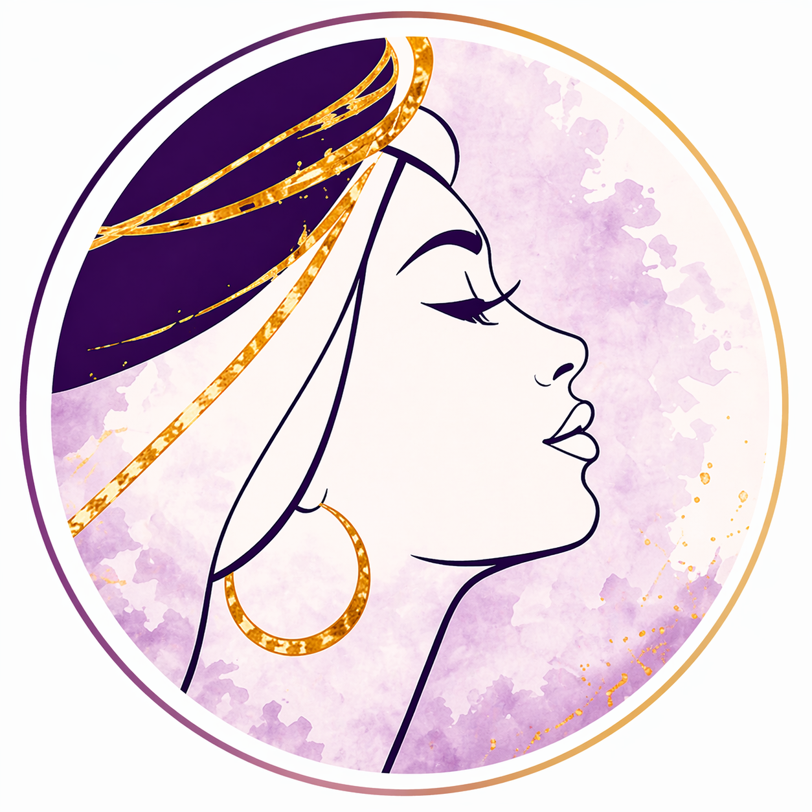

WOMEN of
PURPOSE
Testimonies
REAL WOMEN. REAL STORIES. REAL ENCOUNTERS WITH GOD.
Here’s what some amazing women have experienced
through our meetings and ministry.
♥

“
♡
I love the
different meetings.
“
♡
I really enjoyed the painting meeting, it allowed me to reconnect to my artistic side and I felt the Lord encouraging me through art.
“
♡
I received a prophetic word from Pastor Amelia which was accurate and I am fit and healthy. Pastor Amelia prayed for me and the pain left.